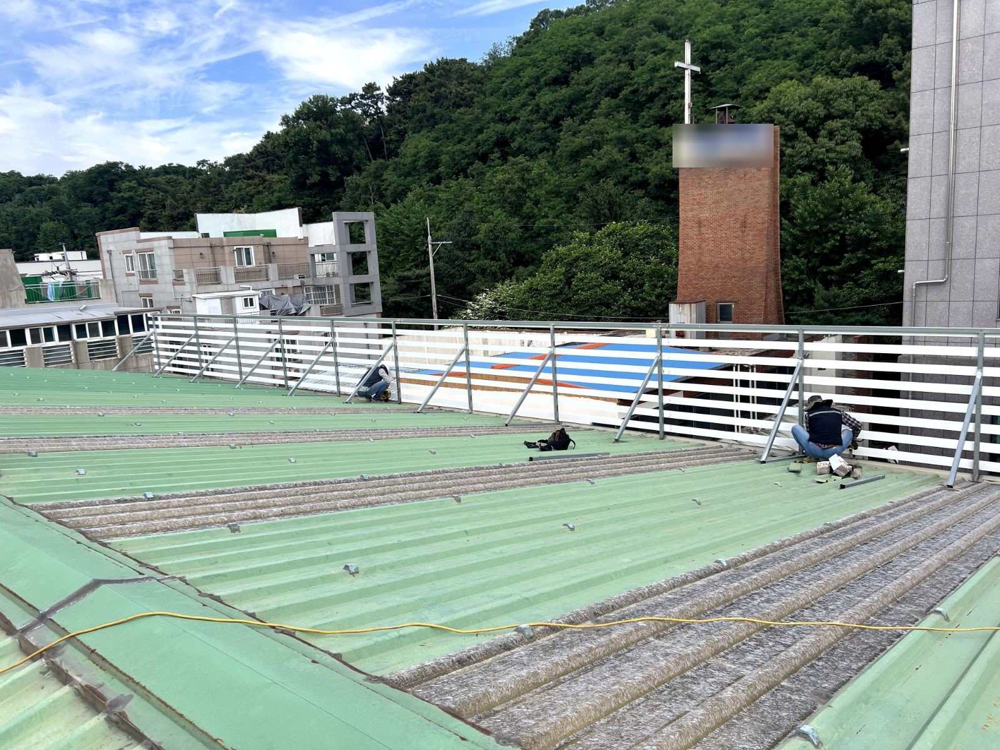
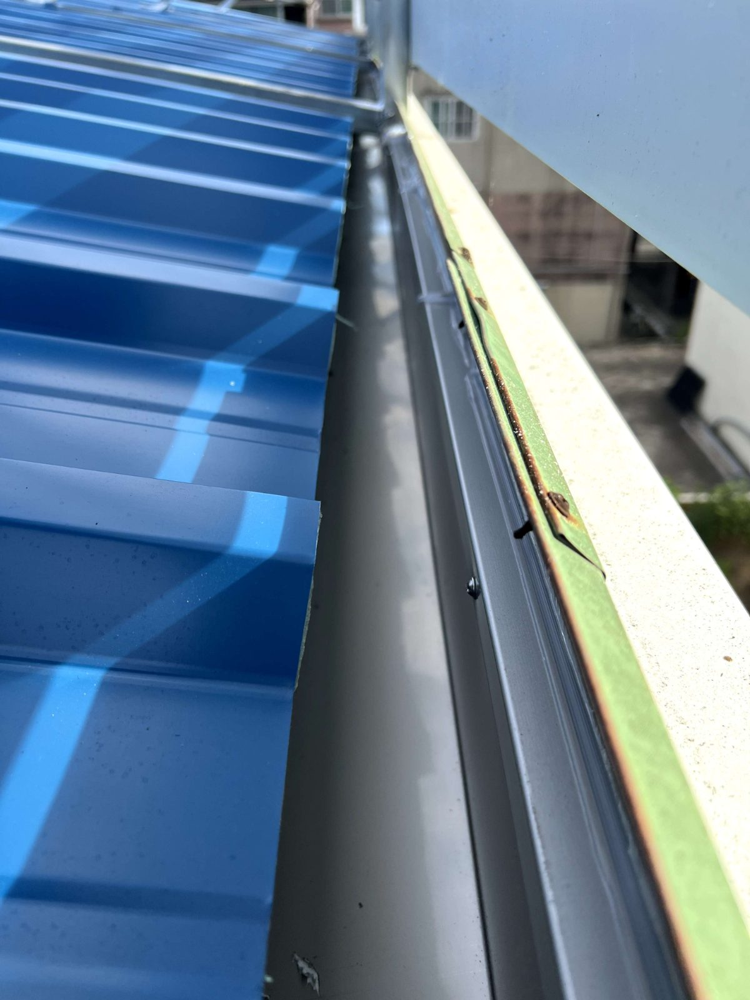

대전 교회 지붕·처마 전면 교체 — 커팅부터 배수구 설치까지

노후된 교회 지붕 판넬과 처마를 철거·커팅하고 새 판넬을 입고·고정한 뒤 배수구와 실리콘 마감까지 진행한 현장입니다. 규모가 있어 세 단계로 나눠 시공했습니다.
어떤 공사였나요
대전의 한 교회 건물 지붕 판넬과 처마를 전면 교체한 현장입니다. 건물 규모가 있어 철거·커팅, 판넬 입고·고정, 배수구·마감의 세 단계로 나눠 진행했습니다.
오래된 지붕·처마를 방치하면
고정 볼트가 삭으면 강풍에 판이 떨어질 수 있고, 배수가 안 되면 빗물이 벽을 타고 흘러 외벽 오염과 누수로 이어집니다. 지붕과 처마는 보기 문제만이 아니라 안전과 방수 문제입니다.
철거와 커팅
기존 고정 볼트를 제거하고, 배수구가 지나갈 자리에 맞춰 처마를 커팅했습니다. 높은 곳 작업이라 안전 확보에 가장 신경 쓰는 단계입니다.

입고·고정과 배수구
새 판넬을 입고해 위치를 잡고 고정한 뒤 배수구를 설치했습니다. 빗물이 배수구 쪽으로 모이도록 경사를 잡는 것이 핵심입니다. 이음부마다 실리콘 코킹으로 방수 처리해 마감했습니다.

이 현장의 포인트
처마 공사는 결국 두 가지입니다. 바람에 견디는 고정, 그리고 빗물이 배수구로만 흐르는 물길. 이 두 가지를 시공 중에 계속 확인하며 진행했습니다. 교회·상가·공장 같은 규모 있는 건물도 직접 견적 방문을 드립니다.